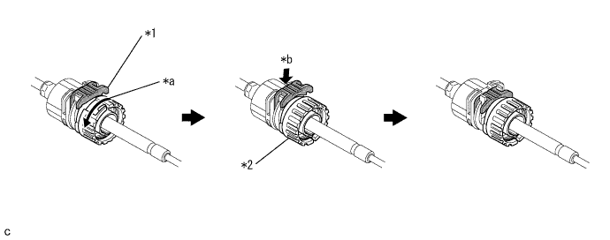
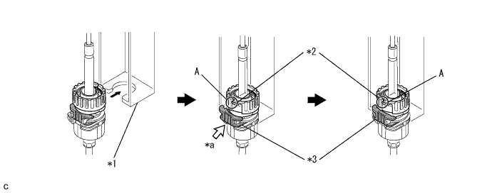
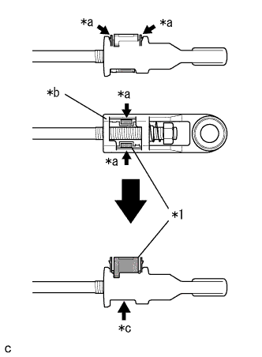
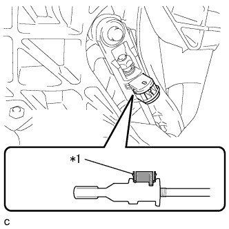
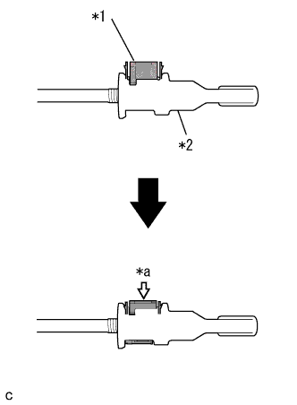
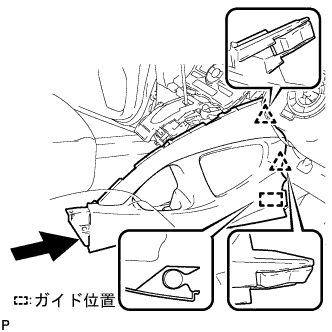
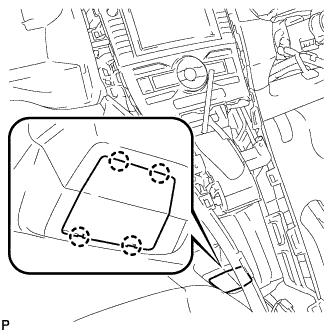
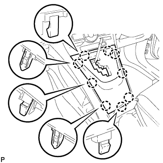

Shift Lock Control Unit Assembly (U660E) Installation |
| 1. Install Shift Lever Assembly |
Install the shift lever assembly with the 4 nuts.
Connect the 2 clamps and 2 connectors.
| 2. Install Transmission Control Cable Assembly |
Turn the nut of the transmission control cable assembly 180° counterclockwise and, while holding the nut, push in the stopper until it clicks 2 time(s).

| *a | 180° Turn |
| *b | Push In |
| *1 | Stopper |
| *2 | Nut |
Install the cable outer of the transmission control cable assembly to the shift lever retainer, check that the spring is at position A shown in the illustration, and push in the stopper.

| *a | Push In |
| *1 | Shift Lever Retainer |
| *2 | Spring |
| *3 | Stopper |
 |
While pushing the claw of the lock piece, hold down the claw on the back side and push up the lock piece from the back side.
| *a | Push |
| *b | Back Side |
| *c | Push Up |
| *1 | Lock Piece |
 |
Install the cable end to the shift lock control unit assembly.
| *1 | Lock Piece |
 |
Push the lock piece into the adjuster case.
| *a | Push In |
| *1 | Lock Piece |
| *2 | Adjuster Case |
| 3. Install Instrument Panel Finish Panel Lower NO.2 |
 |
Push in the direction of the arrow shown in the illustration to engage the 2 clips and guide.
 |
Install instrument panel finish panel lower No.2 with the 2 screws <C>.
| 4. Install Instrument Panel Finish Panel Lower NO.1 |
 |
Push in the direction of the arrow shown in the illustration to engage the 2 clips and guide.
 |
Engage the 4 claws and 2 guides.
 |
Install instrument panel finish panel lower No.1 with the 2 screws <C>.
| 5. Install Instrument Panel Under Tray |
 |
Engage the 4 claws and install the instrument panel under tray.
| 6. Install Box Bottom Mat |
| 7. Install Console Box Insert FR NO.2 |
 |
Insert the guide.
Engage the 3 claws and install console box insert FR No.2.
| 8. Install Console Box Insert |
 |
Insert the guide.
Engage the 3 claws and install the console box insert.
| 9. Install Console Box Assembly Rear |
 |
Insert the 4 guides.
 |
Install the console box assembly RR with the 4 bolts and 2 screws.
| 10. Install Console Box Carpet |
 |
Install the console box carpet.
| 11. Install Console Box Cover RR |
 |
Insert the 2 guides, engage the 4 clips and install the console box cover rear.
| 12. Install Instrument Cluster Finish Panel Assembly Center NO.1 |
 |
Engage the 6 clips and 4 claws.
 |
Install instrument cluster finish panel assembly center No.1 with the 2 screws <C>.
| 13. Install Box Panel NO.2 |
Connect the connectors.
 |
Engage the 2 claws and 4 clips to install box panel No.2.
| 14. Install Position Indicator Housing Assembly |
Connect the connector.
 |
Engage the 9 claws and install the position indicator housing assembly.
| 15. Install Shift Lever Knob |
 |
Turn the shift lever knob in the direction of the arrow shown in the illustration to install it.
| 16. Install Instrument Panel Finish Panel End RH |
 |
Engage the 4 clips and install the instrument panel finish panel end RH.
| 17. Install Instrument Panel Finish Panel End LH |
 |
Engage the 4 clips and install the instrument panel finish panel end LH.
| 18. Connect Battery Negative Terminal |
)| 19. Inspect Shift Lever Position |
Turn IG ON and depress the brake pedal.
When shifting the shift lever to each position, check that the shift lever operates smoothly, moves into each position with a positive feel, and the position indicator shows the position correctly.
Start the engine, and check that the vehicle moves forward when shifting from the N position to the D position, and moves backward when shifting to the R position.
| 20. Adjust Shift Lever Position |
Apply the parking brake and move the shift lever to the N position.
Remove the instrument panel finish panel lower.
(see)
 |
Disconnect the cable end from the shift lock control unit.
 |
Using a thin-bladed screwdriver, pull out the stopper of the transmission control cable, turn the nut approximately 180° counterclockwise, and while holding the nut, disconnect the transmission control cable from the shift lever retainer.
 |
While pushing the claw of the lock piece, hold down the claw on the back side and push up the lock piece from the back side.
Turn the nut of the transmission control cable 180° counterclockwise, and while holding the nut, push in the stopper until it clicks 2 time.

Install the cable outer of the transmission control cable to the shift lever retainer, check that the spring is at position A as shown in the illustration, and push in the stopper.

 |
Install the cable end to the shift control unit.
 |
Push the lock piece into the adjuster case to lock it.
After adjustment, inspect the operation, and if there is a problem, adjust again.
Install the instrument panel finish panel lower.
(see)